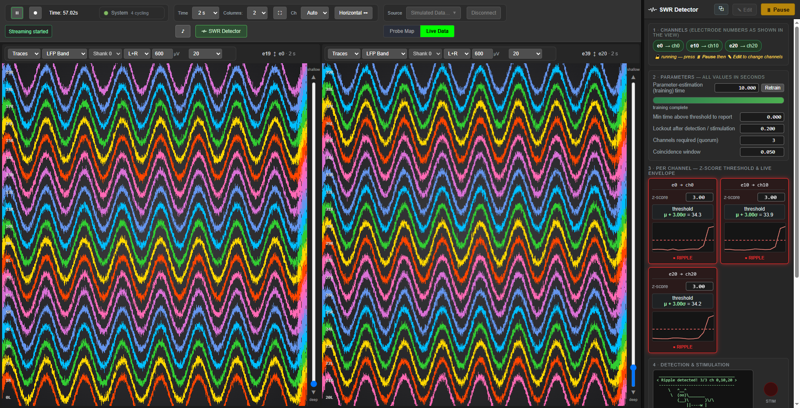
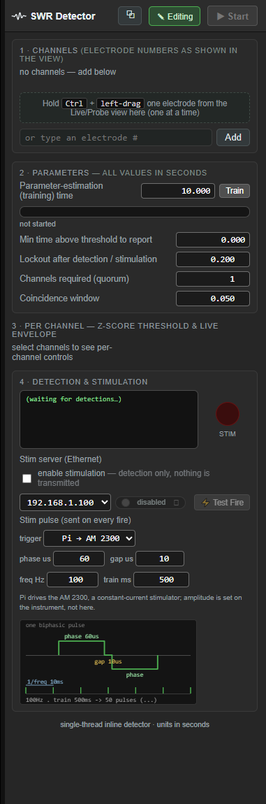
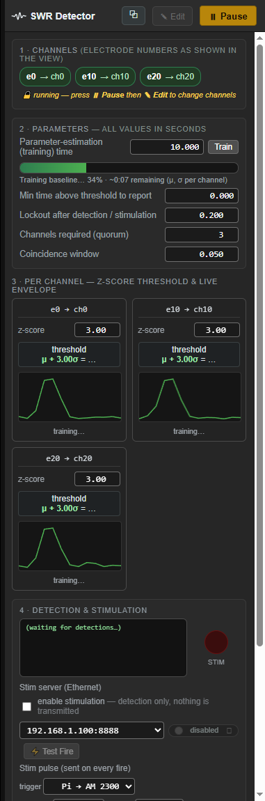
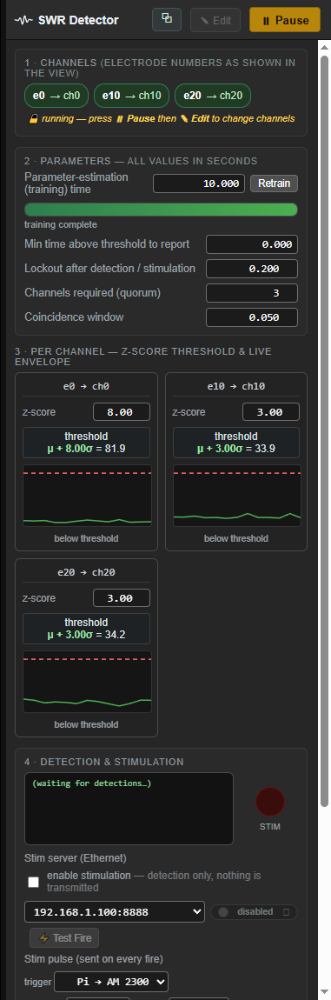
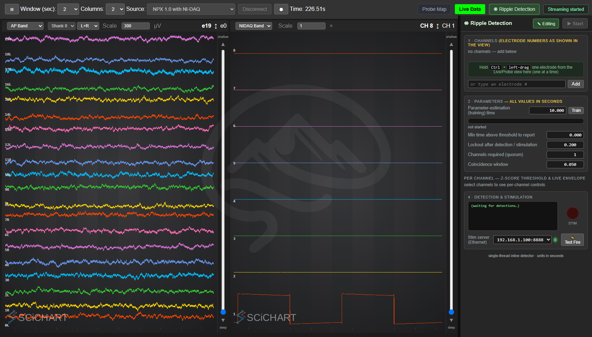
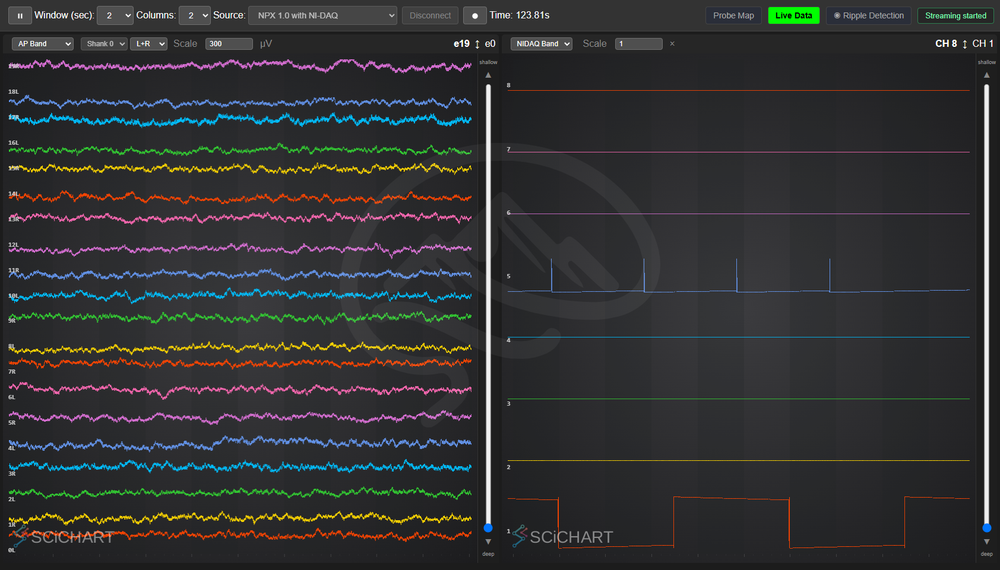

SpikesPeak — Ripple Detection Module (User Guide)#
The Ripple Detection module watches the LFP band for hippocampal sharp-wave ripples (SWRs) and, when enough channels cross threshold together within a short window, fires a stimulation trigger (closed-loop). It lives in a right-side dock in the browser UI and coexists with the Probe Map / Live Data views (a toolbar tab toggles it). Everything is GUI-driven — you pick the channels, set the parameters, and start/stop it live; nothing is baked into a config file.
New here? Read
GUI-Guide.mdfirst for launching SpikesPeak and picking a source, andSimulatedData.mdfor every hardware-free source you can drive this with. This guide covers operating the ripple module. Screenshots below are from the simulated sources. Stimulation server (Raspberry Pi) setup: see ../raspberrypi_pulsegenerator/README.md.For developers: the detection algorithm + per-probe data path is in
../developer_docs/RippleDetection.md; the GUI ↔ backend WS command/event contract is in../developer_docs/RippleGui.md. This guide does not duplicate them — it is the operation manual.
The whole module at a glance (NP1 sim, three channels detecting a ripple):

On the right dock, top→bottom: ① Channels, ② Parameters + Train/Retrain + progress bar, ③ per-channel
columns (z-score, μ+zσ threshold, rolling envelope), ④ Detection & stimulation (cowsay, red STIM LED,
and the stimulation controls — §5a). The main view (left) is the Live Data waveforms on the LFP band (where NP1 ripples live — see the tip in
§5); the ripple burst is the bright vertical band. This shot runs with quorum = 3: all three channels
(e0, e10, e20) are in ● RIPPLE together, so the cowsay reports 3/3 ch 0,10,20. Stimulation is off in
these shots — that is why the STIM LED is dark; see the callout in §5.
1. Open the module and pick a source#
- In the toolbar's second row — beside
Probe Map | Live Data, and the▣ OneBox/▤ NI-DAQdevice tabs when those sources are connected — click SWR Detector. The dock slides in on the right and the main view shrinks to fit (no overlap, even columns). Drag the dock's left grip to resize it. - Pick a source that produces an LFP band the detector can read (via the Source dropdown → Simulated Data…, or a real-probe profile). The best sources for learning the module:
| Source (in the Simulated Data picker) | What it is |
|---|---|
| Neuropixels 1.0 — Ripple Detection (GUI) | NP1 sim, injected ripples, no channels pre-selected |
| Neuropixels 2.0 Multishank — Ripple Detection (GUI) | NP2 sim, injected ripples, no channels |
| Simulated Neuropixels 2.0 (play file) | Replays an HDF5 file through all channels (§6) |
| real Neuropixels or PXIe with NI-DAQ | attaches to the live probe's LFP band — native data.npx.lfp on a 1.0, derived data.lfp on a 2.0 |
(See SimulatedData.md for the full source list and the ripple-injection knobs.)
The module always starts paused, with zero channels — it will not train or detect until you add channels and press Start:

Note the header shows ▶ Start (disabled, grayed — no channels yet) and the training bar reads "not started".
2. Select detection channels#
The panel shows electrode numbers (as labeled in the Live/Probe view). Add one electrode at a time:
- Drag from a view: left-drag an electrode — a label in Live Data, or an electrode on the Probe Map — into the dock. Hold Ctrl, or — because the dock is open — just drag (no Ctrl needed).
- Type it: enter an electrode number in the box under the chips and click Add.
Each channel becomes a chip (e50 → ch98 ✕, showing the electrode→read-out-channel mapping) and gets its own
column below. Remove one with its ✕. Channels are only editable while paused + Edit (§4).

Here three electrodes 0, 10, 20 were added. Each column status reads "idle — press ▶ Start" and the
Train/Retrain button reads "Train" (nothing has trained yet). The Start button is now enabled.
Electrode vs channel: on NP2 the mapping is not identity — e.g.
e100 → ch196,e200 → ch248(the probe's block-permutation wiring). The chip shows you exactly which read-out channel your electrode lands on.
3. Parameters (section ②)#
All times are in seconds. Set these before Start (or pause + Edit to change them later):
| Control | What it does | Default |
|---|---|---|
| Parameter-estimation (training) time | Seconds of LFP used to estimate each channel's baseline mean/σ. Longer = steadier threshold, slower to arm. | 1200 s |
| Train / Retrain button | Runs (or re-runs) baseline estimation. Reads Train until every channel is trained, then Retrain. Enabled only while running. | — |
| Min time above threshold to report | A channel must stay above threshold this long before it counts (rejects 1-sample blips). 0 = react instantly. |
0.000 s |
| Lockout after detection / stimulation | Refractory — after a detection, channels can't re-fire for this long. | 0.200 s |
| Channels required (quorum) | How many selected channels must cross threshold together (within the coincidence window) for a true detection + stim. Must be ≤ channels selected. Default 1 = any single channel; the screenshots here use 3 (NP1) and 2 (NP2) to show the coincidence logic. At quorum 1 a detection reports only the first channel to cross — the rest are suppressed by the lockout — so if you want to see several channels light up together, raise the quorum. | 1 |
| Coincidence window | Time window within which the quorum's crossings must all fall. | 0.010 s |
| Per-channel z-score (section ③) | Each column's own z; threshold = μ + z·σ. Editable any time, even while running — live sensitivity tuning; the threshold updates instantly. | 3.00 |
The "Default" column is what the dock shows before it has heard from the backend. The backend then sends its real values and the fields update — so if a number here does not match what you see, believe the dock, not this table. It matters most for the training time: the panel's 1200 s is a placeholder, and a detector that was set up from a script may be running something else entirely.
Tip — for a quick sim test, set the training time to 3 s so the module arms in a few seconds instead of 20 minutes. There is also an amplifier-settle gate before training starts — 6 s on the simulated ripple sources (so first detection is ~9 s after Start with a 3 s training time), 1 s on several hardware profiles. The backend console prints the exact value at connect; that line is the authority.
4. Run it: Start / Pause / Edit#
The dock header has two buttons:
- ▶ Start — begins the module. The first Start trains the baseline (progress bar fills), then detects. A Start after a Pause just resumes with the existing baselines (no retrain). Disabled until ≥1 channel.
- ⏸ Pause — stops detection + stimulation. Live envelopes keep streaming so you still see data; baselines are kept.
- ✎ Edit — enabled only while paused. Unlocks the configuration (channels + parameters). While running, the config is locked (no dragging channels or editing params — except the per-channel z-score, which stays live). Press Start to re-lock.
While training, each column shows "training…" and the progress bar fills:

Adding a channel to an already-trained set: pause → Edit → drag the new electrode in → Start. Existing channels keep their baselines; only the new channel trains ("train-only-new").
5. Reading the display (sections ③ + ④)#
⚡ To SEE ripples in the Live Data view, pick the right band. Each column has a band dropdown (top-left of the column). Ripples are clearest in the LFP band on NP1, and in the RAW band on NP2 / play-file. They are also present in the NP1 AP band, at roughly 60% of the LFP band's amplitude: the probe's AP high-pass sits at 300 Hz, and a first-order corner attenuates a 150–250 Hz ripple by about 5 dB rather than removing it. So an AP-band column is a valid place to see a ripple — it is just a noisier one, because the spiking band is in there with it. The detector always reads the LFP band. In the LFP/RAW band the ripple bursts show as periodic denser vertical bands across channels — but the clearest view of a ripple is the per-channel envelope in the dock, which spikes above the dashed threshold on every detection. (Tip: a ~2 s Window and a ~600 µV Scale separate the traces nicely and make each ripple burst stand out as a bright vertical band — that's what the screenshots below use.)
Per-channel column (section ③): - the μ + z·σ = value threshold, - a rolling envelope plot — the last 500 ms of the ripple-band envelope, with the threshold drawn as a dashed red line, - a status line: - idle — press ▶ Start — added but not running, - training… — running, estimating baseline, - below threshold — armed and watching, - ● RIPPLE — the envelope crossed; the column flashes red for the lockout.
Detection & stimulation (section ④):
- a cowsay banner prints each detection: Ripple detected! k/N ch <list> (k of N channels reported, and
which electrodes),
- a red STIM LED, and the stimulation controls (§5a).
⚠️ The STIM LED does NOT light on detection.#
It lights only when the stimulation server acknowledges a real pulse — the Pi ACKs after the biphasic train has actually gone out, and that ACK is the one and only thing that turns the light on. The light means "a pulse fired", not "we sent a fire".
So an unlit LED beside a happily-firing cowsay is not a fault. It is the normal state of a detection-only rig — and it is the honest one, because there is a real difference between having detected a ripple and having stimulated. To make it light you need the whole stimulation path: the
enable stimulationgate on, the server armed, and a server that answers. §5a is how.
A true detection fires when quorum channels cross within the coincidence window — then the stim
trigger goes out. The cowsay shows k/N and which channels reported. Below, the NP2 sim with quorum = 2:
channels e0 and e50 are both in ● RIPPLE, so the cowsay reports 2/3 ch 0,50 — only channels that
cross together count. Note that stimulation is off in this shot (enable stimulation is unchecked and
the server pill reads disabled), so the trigger is computed and nothing is transmitted:
Why e100 reads below threshold with its envelope over the line. That label means “not part of the reported detection” — it is the backend's detection state, not a measurement of the signal. The sparkline above it is the raw envelope, so a channel that crosses a moment outside the coincidence window shows exactly this apparent contradiction. The wording is a known bug in the dock, not a fault in the detector.

Live threshold tuning#
You can change any column's z-score while the module is running — the threshold recomputes immediately (higher z ⇒ higher threshold ⇒ fewer detections). Below, e0's z was raised from 3 to 8 mid-run and its threshold jumped from ~34 to ~82 — note the other two columns, untouched, still read μ + 3.00σ:

5a. Stimulation — the other half of the dock#
Everything so far detects. This is what makes something happen when it does. Two switches, both off by default, and BOTH are required — the master gate decides whether this host may transmit at all, the arm toggle decides whether the stimulator will act on it.

enable stimulation — the master gate#
The checkbox at the top of the Detection & stimulation card. Unchecked by default, and no shipped config turns it on. While it is off, no datagram can leave this host: every send path in the backend is gated on it, so the rig is detection-only as a matter of structure rather than of care. The arm toggle and ⚡ Test Fire below it are grayed out while it is off, because they would be silent no-ops otherwise, and a control that quietly does nothing is worse than one you cannot click.
Ticking it is a live action — no reconnect, no config edit. The cowsay says "stimulation ENABLED — arm the stim server to go closed-loop", which is also the reminder that you are not finished.
Arm / disarm — the small green LED#
The small stim-server LED beside the IP selector is a clickable pill (LED + status word + a ⏻
icon): click to arm, click again to disarm. Green and reading armed means the server answered.
- Arming is always an explicit action. Nothing arms it for you — not selecting a source, not pressing Play, not starting detection.
- A disarmed server ignores fires. Detection keeps running and the cowsay keeps printing; no pulse goes out. That is the intended way to stop stimulating without tearing the source down.
- It works without streaming, so you can arm and test before you press ▶.
This is the most expensive misunderstanding in this system's history. An earlier version of the documentation said the detector armed itself on source selection. A 1000-detection OneBox run reached 944 detections with ZERO stim fires because the operator believed it. If a run matters, confirm the pill is green before you start it, and confirm the STIM LED blinks on the first detection.
⚡ Test Fire — one pulse, no detection needed#
Sends a single arm + fire to the stimulation server immediately. It is the fastest way to answer "is the whole path alive?" without waiting for a ripple: press it, and the STIM LED should blink and the cowsay should read ⚡ Pulse fired (confirmed). If it does not, the problem is in the stimulation path and has nothing to do with your detection settings.
Captured on the other end of that path — the biphasic pulse arriving on NI-DAQ ai4:

trigger — which path fires (Pi / OneBox DAC0 / both)#
| option | what fires |
|---|---|
| Pi → AM 2300 | the default: UDP to the stimulation server, which drives the AM Systems 2300 |
| OneBox DAC0 (IO0) | the OneBox's own WavePlayer DAC, out of DAC0 → breakout BNC IO0 |
| both (for an A/B) | both, from the same threshold crossing — which is the point |
Choosing a DAC option reveals an amp V box (0.1 – 5 V, default 2.0). It appears only for the DAC because the Pi's AM 2300 is a constant-current stimulator whose amplitude is set on the instrument — a volts box for it would be a lie. The dock says as much underneath, and warns that the DAC's timing resolution is one playback sample (10 µs at 100 kHz) while the OneBox ADC samples at 33 µs, so the ADC cannot verify a 10 µs feature; use a scope.
both exists so the two paths can be compared on identical detections rather than on separate runs. Measured that way (2026-08-25), the DAC reaches voltage a median 363 µs before the Pi does.
The pulse parameters#
Four editable fields, applied to every fire, with a live schematic drawn underneath them that
redraws as you type — one biphasic pulse on top (both phases and the gap labeled), the train at real
1/freq spacing below, with a <freq>Hz · train <ms> → <N> pulses summary.
| field | default | what it is |
|---|---|---|
| phase us | 60 | duration of each phase of the biphasic pulse |
| gap us | 10 | interphase gap |
| freq Hz | 100 | pulse repetition rate within the train |
| train ms | 500 | total train duration — so 100 Hz × 500 ms is 50 pulses |
Edits commit when you leave the field (or press Enter), not on every keystroke, so a half-typed number is never sent to the stimulator.
6. HDF5 "play file" — replay a recording through all channels#
Pick Simulated Data… → "Simulated Neuropixels 2.0 (play file)". The picker gives you a path line edit:
- Type or paste a full path to an
.h5file and click ▶ Play file — it plays that file directly. - Or leave it blank and click 📂 Browse… to open your machine's native file dialog.
The last path is remembered. A missing/wrong-format file streams silence + logs a warning (no crash) — just re-select and pick a valid one.
The play-file source renders the Probe Map like a real probe, and you select detection channels + run exactly as above:


File format#
The .h5 must contain:
- a dataset data, int16, shape [nSamples × nChannels] (or 1-D [nSamples] = one trace broadcast to
all channels), sample-major;
- an attribute sampling_rate (int32, Hz — expected 30000);
- optionally num_channels (int32).
Generate a synthetic one with scripts/gen_synthetic_ripples.py — see SimulatedData.md
and ../developer_docs/SyntheticSources.md. Other formats (e.g. the
recorder's .bin + .json) are a planned future feature.
Note: the play-file live view can look sparse compared to the sine-wave sims — the HDF5 here is ripple-band-only, low-amplitude data with ~1 s-spaced bursts, not a full-spectrum neural signal. Detection is unaffected (the envelopes + cowsay show the activity).
7. A complete worked example (NP1 sim)#
- Source → Simulated Data… → Neuropixels 1.0 — Ripple Detection (GUI). Wait for "device ready".
- Press ▶ Play (toolbar). Click SWR Detector to open the dock.
- Switch the main view to Live Data. In the dock, add electrodes
0, 10, 20(drag them from the view, or type + Add). - Set Parameter-estimation time = 3 (for a quick test). Press ▶ Start.
- Watch the progress bar fill ("training…"). After ~9 s the columns arm ("below threshold"), thresholds
appear (μ + 3σ ≈ 45), and detections start firing — the cowsay prints
Ripple detected! 1/3 ch 0and the crossing column flashes ● RIPPLE. The STIM LED stays dark, and that is correct: this walkthrough never enabled stimulation, and the LED lights only on a confirmed pulse from the stim server (§5a). - Try raising a column's z-score to 8 → its threshold jumps and it stops firing. Lower it back to see it fire again.
- Pause, click Edit, add electrode
30, press Start — onlye30re-trains; the others keep detecting.
(This is exactly the verified test run behind the screenshots above: 6 detections, thresholds 45.1/44.2/44.4, Train→Retrain after training, live-z 45→69.)
8. ASAP delivery — trading CPU for a shorter loop#
The detector can only fire on data it has been given. By default the acquisition source hands over a block of samples every 1 ms, so on average half a millisecond of the closed loop is just waiting for the next delivery. ASAP mode shrinks that block to whatever the event loop can produce, which takes roughly half a millisecond off the loop — measured, not estimated:
ASAP saving, threshold → stimulus, per rig — one column per basestation, because they are separate measurements and blending them produces numbers that appear in neither:
| NP1.0 | NP2.0 | |
|---|---|---|
| PXIe (1 ch / 2 ch q2 / 4 ch q3) | −506 / −547 / −521 µs | −751 / −578 / −578 µs |
| OneBox (same three) | −517 / −561 / −529 µs | −528 / −505 / −534 µs |
Read that as roughly half a millisecond off the loop, on every probe, every basestation and every
quorum level — the consistency is the finding. The one outlier, NP2.0 on PXIe at 1 channel (−751 µs),
comes from an unusually high default arm (1.351 ms), not an unusually fast ASAP one;
CLOSED_LOOP_LATENCY.md reads that as more likely an artifact of the PXIe sync fit than a real effect.
It is not free. ASAP polls continuously — it is a deliberate busy-wait — and costs about one core, roughly 7× the baseline acquisition CPU. That is why it is off unless something asks for it.
You probably already have it#
Every shipped ripple profile turns ASAP on. If you selected one of these, you are already running it, and there is nothing to do:
Simulated NPX 1.0 Ripples · Simulated NPX 2.0 Ripples · the two … + Ripple Detection (no
channels) profiles · the … + NI-DAQ + Ripples profiles · and on real hardware the (ASAP)
profiles — NPX 1.0 (OneBox, ASAP), NPX 2.0 Multishank (OneBox, ASAP), NPX 1.0 with NI-DAQ
(ASAP), NPX 2.0 Multishank with NI-DAQ (ASAP).
Confirming it is on#
There is no GUI switch — it is a property of the source, fixed when you connect, because changing delivery cadence mid-acquisition would put a discontinuity in the middle of your data. Check the backend log line printed at connect:
[Npx2MSProbe] acquisition poll interval 0 ms (low_latency = true)
0 ms is ASAP. 1 ms is the default. The same line appears for every source type, naming itself.
Turning it on for a profile that does not have it#
Add one key to the source node of the profile (config/<Profile>.yaml) and reconnect:
sources:
- name: "source.npx.pxi"
low_latency: true # ASAP delivery -- smallest blocks, ~7x acquisition CPU
Prefer copying the profile and adding the key to the copy, so the plain-streaming version stays available — a recording-only session should not pay a core for latency it does not use.
When NOT to use it#
- Recording without a closed loop. ASAP buys latency, and a file does not care about latency.
- Long unattended sessions, where a spare core is worth more than half a millisecond.
- Any module other than the ripple detector. By project convention the ripple detector is the only one that opts in by default; the live display, recorder, LFP derivation and audio all run at the normal 1 ms poll and none of them assumes otherwise.
Full method, the per-stage breakdown and the A/B that produced these numbers:
developer_docs/LatencyProfiling.md.
9. Tips & troubleshooting#
- Nothing detects? Confirm the module is running (button shows ⏸ Pause), training reached 100% ("training complete"), and your z-score isn't so high that ripples don't cross it. Detection needs a warm-up (the settle gate — 1 s or 6 s depending on the profile, printed in the console — plus your training time).
- Detections fire but nothing stimulates? Work down §5a in order: the
enable stimulationcheckbox is on, the stim-server pill is green / armed, and ⚡ Test Fire produces a confirmed pulse. The first two are off by default and both are required; Test Fire tells you whether the fault is in the stimulation path or in your detection settings. - STIM LED never lights, but the cowsay prints detections? That is exactly what a detection-only rig looks like — see the warning in §5. The LED needs a confirmed pulse from the server, not a detection.
- The Start button is grayed out → you have no channels selected. Add at least one.
- "Quorum" never met? Lower Channels required, widen the coincidence window, or add more channels.
- Too many false detections? Raise the per-channel z-score, increase Min time above threshold, or raise the quorum.
- Play-file picked the wrong file / didn't open? Re-select the play-file source to reopen the picker.
- Module shows "enabled" on a fresh source? It shouldn't — it starts paused with 0 channels. If a config sets
auto_start: true, it will run on Play (the sim GUI configs set it false). - Real hardware: the detector reads the native LFP directly (NP1) or a derived LFP (NP2) for lowest closed-loop
latency. Set
debug_files: falsein the profile for hardware runs (per-sample debug dumps add I/O latency).